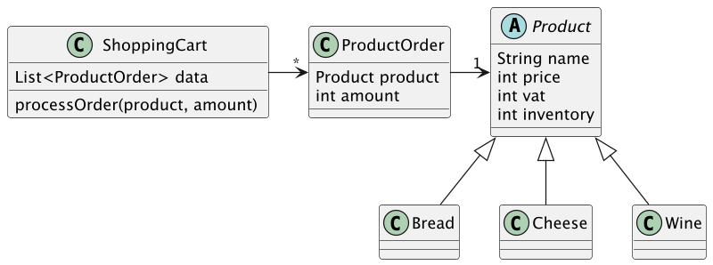
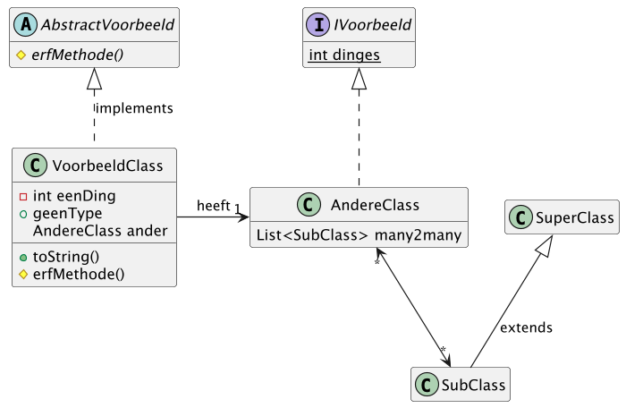
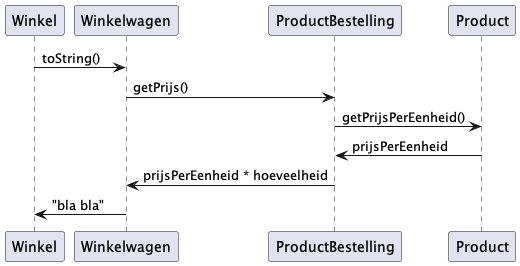
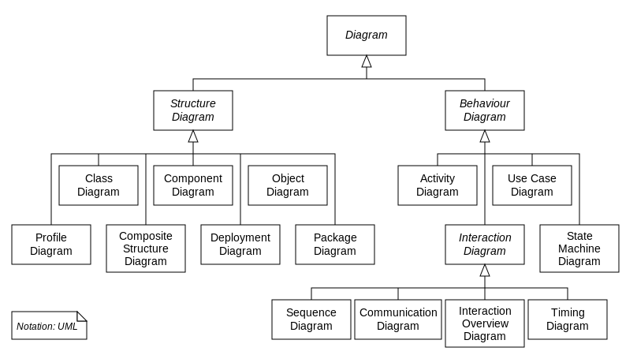

Code Sensei
Concepts from your projects Domain
Usually from your customers business domain
Classes for nouns, "things", concepts
Relations between classes
Functions: verbs

Problems with complex UML:
Classes: inheritance, composition etc.

"How processes operate with one another and in what order"


(for the real nerds) PlantUML